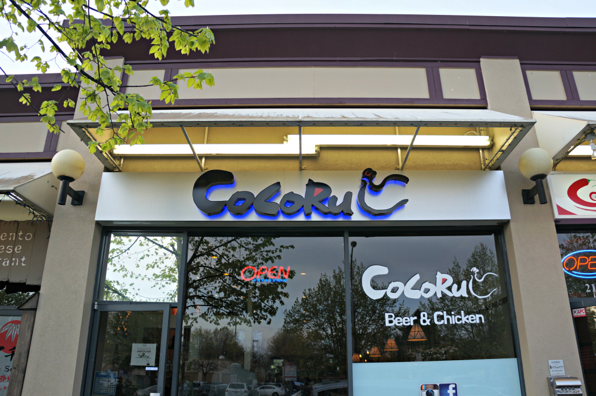

An Exploration of Vancouver Eats
If you’re a fan of Kdrama, you will know why fried chicken and beer is a big deal. Besides the fact that we get to pretend to be Cheon Song-yi (aka Jun Ji-hyun) in You Who Came from the Stars, Korean fried chicken and beer is actually an amazingly delicious combo. No need for diet coke and popcorn! We are on the foody trend here.

If you don’t have the time and luxury to go to Downtown and visit Zabu chicken, you can pretty much drive to Richmond in Lower Mainland and taste this deliciousness. Cocoru is located on Alexander Road and is open until late night.
There is a diverse selection of alcoholic beverages including flavoured makkoli (Korean rice win), beer, flavored soju and cocktail sojus. The menu is pretty much a small selection of appetizers and mostly fried boneless chicken. Did you say boneless chicken?! What more can you ask for! Now you can eat fried chicken with your date without spitting out bones and worrying about your image.
They offer a half and half boneless chicken selection for about $23. The half Soy Garlic and half Dak Gang Jeong (spicy Korean sauce) is a great combination. The skin is crispy and the meat is rather juicy. Another one of my favorite on the menu is the snowfall chicken, which is deep fried chicken with Bechamel sauce and grated Grano Padano cheese on the top. Sorry lactose-intolerant peeps! The fluffy savoury cheese and béchamel sauce really complements each other and is quite a unique combination.
You can visit their Facebook page here.
(Just sign in with your FB account and you can view their photos and menu online!)